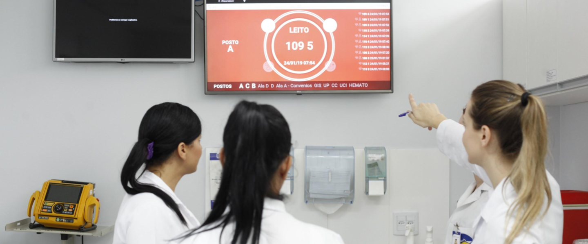

Criada pelo Analista de Sistema Jacson Fressatto, com o objetivo de reduzir os números de morte por sepse(infecção generalizada) nos hospitais brasileiros. O robô surgiu logo a pós a perda da filha que veio a falecer recem-nascida por sepse. As tecnologias usadas nessa maquina são computação cognitiva e machine learning, ou seja, um software de inteligência artificial com a capacidade de armazenar dados e identificar pacientes em risco. O monitoramento é online e constante, os dados são transmitidos através de painéis na base de enfermagem. Laura analisa mais de 90 variáveis, das informações clínicas (frequência cardíaca, respiratória, pressão, etc).
| // | Redução de mortalidade | Redução do tempo de internação |
|---|---|---|
| Com Laura | 25% | 10% |
| Referências: Estadão e Medicalway |